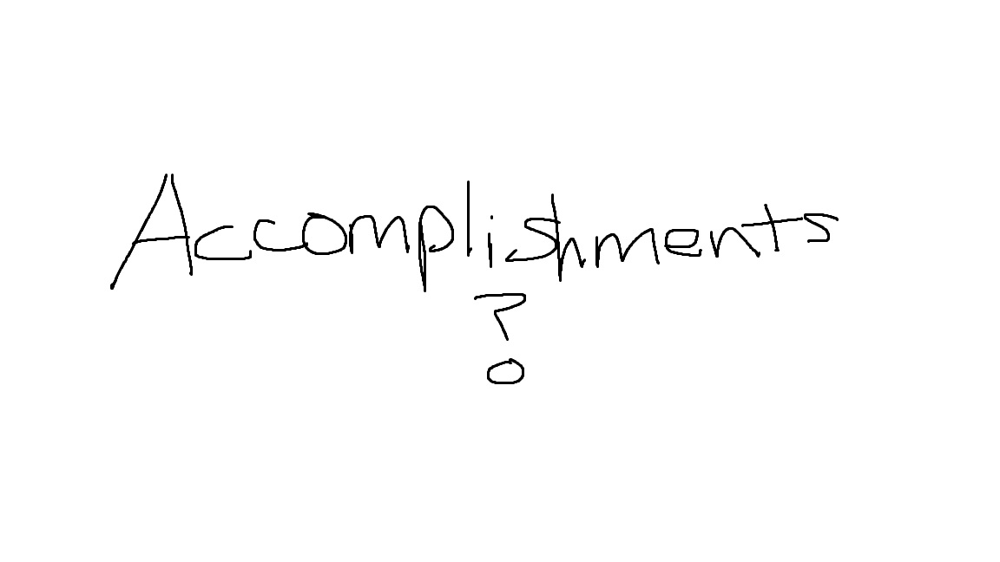

Education
The only type of degree I have right now a high school one, associate degree, and soon to be bachelor’s degree. As for my academic scholarships, it will probably be earning scholarships and getting this far. I remember back when I first came here to the University of New Mexico, I had to take a math 1430 course called “Applications of calculus I” in Dane Smith hall and having no prior knowledge of calculus at all, I struggled bad. Now I did mention I was at Mckinely Academy program, but I never had the pre requirements I guess you could say for calculus other than statistics and college algebra which DO NOT translate into calculus. This was also my first encounter with a tough instructor. It was a white lady with a heavy accent, and she didn’t allow any electronics even for note taking, if you were one second late to class she would mark you absent, no restroom breaks, and tough grader. If you used a different method other than hers, she wouldn’t give you the points even if you had the correct answer and if you forgot to label a graph for example, forgetting to put the x or y, you would get doxed points off. As I sat there every Tuesday and Thursday at 9 in the morning, I questioned myself this is probably what my ancestors felt like in boarding school without the ruler whipping and erasing identity. Luckly though she approved of my W grade in November and I retook calc next semester with a different instructor and passed.